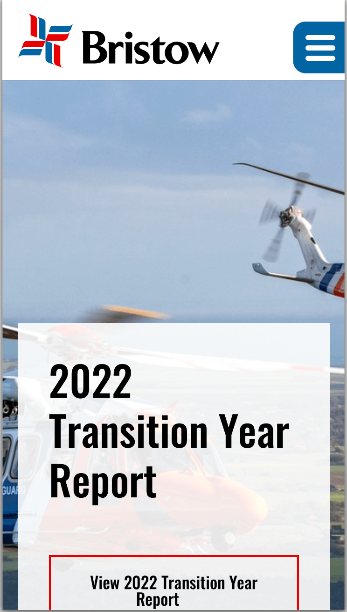
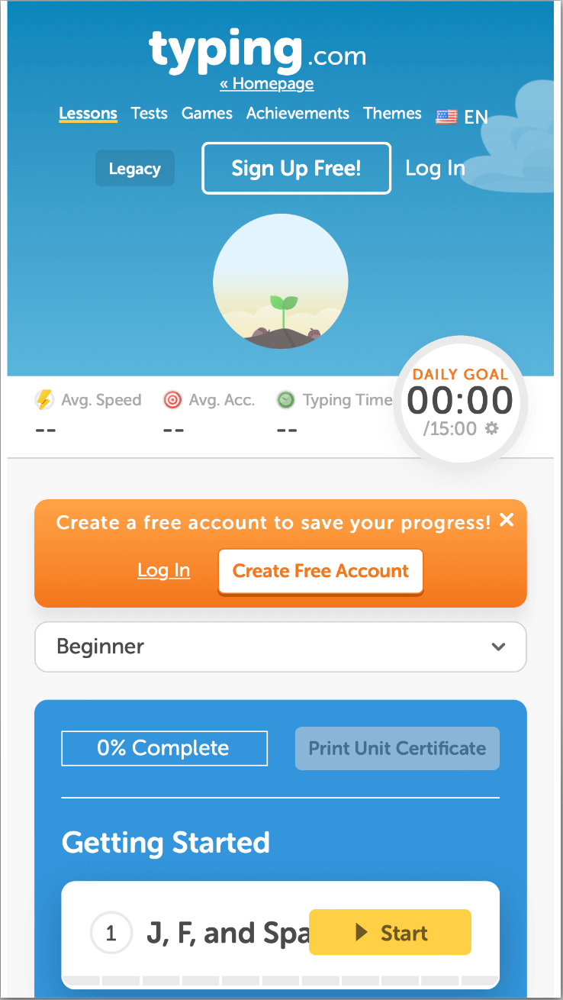

PARC Repetition
Bristow Helicopters
https://www.bristowgroup.com In this website we can see the use of PARC repetition. We can see the same colors of the logo on the helicopter tail. We can also the same red from the logo on the stroke of a message in the main body.
PARC Alignment
Federal Aviation Administration
https://www.faa.govOn this site we can see the use of PARC aligment on the main message which is centered aligned. We can also see tha left aligment of that message with the paragraph at the bottom.
PARC Constrast
Typing
https://www.typing.com/student/lessons On this site we can see the use of PARC Contrast between the colors used. We can see an orange rectagle which give a contrast and hierarchy to log in to the site or create a user.